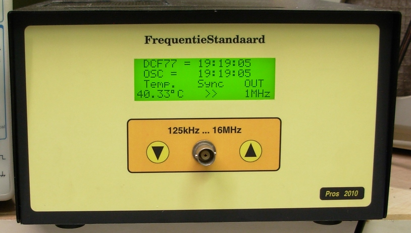
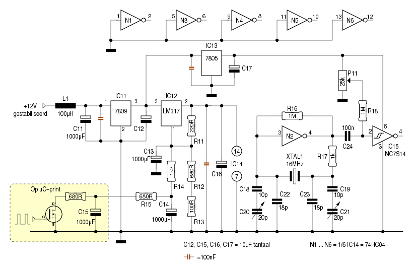
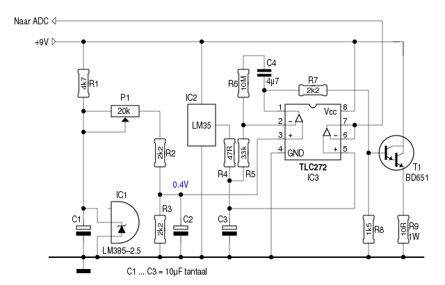
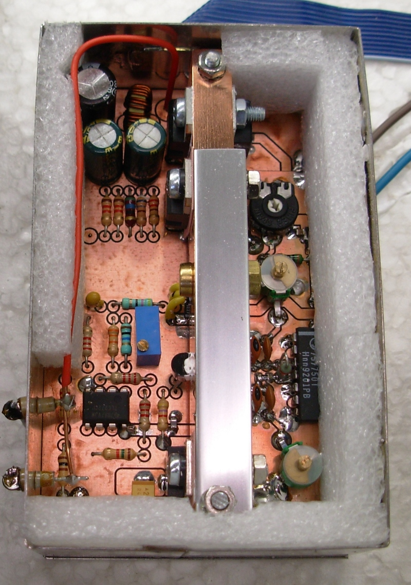

Ik had nood aan een frequentiestandaard, voornamelijk ten behoeve van een zelfbouw-frequentiemeter. Die betrekt zijn tijdbasis momenteel uit een gewone kristaloscillator in DIP-14 formaat, en die dingen laten wat te wensen over wat nauwkeurigheid betreft.
De eisen zijn niet bijzonder hoog:
Het ―zonodig― bijregelen van de oscillator wordt toevertrouwd aan een microcontroller, die zijn referentie uit een DCF77-module betrekt.

Zoals het schema toont, bestaat de oscillator uit weinig meer
dan een inverter, twee weerstanden, een kristal en enkele condensators. Een
klassiek ontwerp, dus.
Teneinde de werking van de oscillator zo min mogelijk te
beïnvloeden, is aan zijn uitgang een buffer geplaatst. Voor
deze buffer is doelbewust een afzonderlijk IC gebruikt, zodat de
overige inverters in de 74HC04 zich rustig houden. Met P11 kan
de gelijkspanning op de ingang van IC15 halfweg tussen zijn
omslagpunten ingesteld worden, zodat aan zijn uitgang een
evenwichtige blokgolf te voorschijn komt.
Dat is noodzakelijk, omdat deze blokgolf dienst doet als klok
voor een microcontroller.
Met behulp van C20 en C21 dient de oscillator ingesteld te
worden op ―zo precies mogelijk― 16MHz, en dit terwijl de
puls/pause-verhouding van het PWM-kanaal op
50% ingesteld staat.
Kandidaad-nabouwers kunnen hierbij tegen de beperking aanlopen,
dat de gewenste frequentie niet gehaald kan worden. In dat geval
kunnen voor C18 en C19 (en desnoods voor C22 en C23) andere
waarden gekozen worden.
Vermits we de temperatuur constant houden, en de
voedingsspanning regelen, is dit een onderdeel waar we niet
lichtzinnig mee omspringen.
Een spanningsregelaar als de 7805 of de LM317 doet zijn werk
naar behoren - tenzij we hoge eisen gaan stellen aan de
nauwkeurigheid. Zowat alles ―ingangsspanning, temperatuur,
uitgangsstroom― heeft invloed op de uitgangsspanning.
Wat metingen aan een 7805 leveren dit op:
IN LOAD I OUT T 8V 470R 16mA 5.04726V 20°C 10V 470R 16mA 5.04756V 20°C 15V 470R 16mA 5.04775V 20°C 8V 470R || 20R 262mA 5.04664V 20°C 10V 470R || 20R 262mA 5.04685V 20°C 15V 470R || 20R 262mA 5.04692V 20°C 10V 470R || 20R 262mA 5.04079V 40°C <<Als we de uitersten vergelijken, komen we op een verschil van meer dan 6mV. Gelukkig wordt het wat gunsiger, als we alle spanningsregelaars mee in de oven stoppen - dan zijn we alvast verzekerd van een gelijkmatige temperatuur.
Dan het regelen zelf.
Als de FET op de μC-print spert, stelt IC12 zijn
uitgangsspanning in op 5.4V.
Wanneer de FET constant in geleiding is, daalt de
voedingsspanning naar 4.4V
Dat spanningsverschil van 1V vertaalt zich in een frequentieverschil
van 7ppm.
Door nu een PWM-signaal op de gate van de FET te plaatsen,
kunnen we de uitgangsspanning van IC12 in kleine stapjes
bijstellen door de duty-cycle te wijzigen.
C13, C14 en C15 moeten daarbij beletten dat er
sporen van het PWM-signaal terug te vinden zijn op de ADJ-pin
van IC12, en bijgevolg ook op diens uitgang. Op het eerste zicht
lijkt het dat ze danig overgedimensioneerd zijn, maar de
PWM-frequentie bedraagt slechts 246Hz, en dat valt niet weg te
filteren met kleine elco's.
Bij een 16-bits PWM-kanaal beschikken we over meer
dan 65000 stapjes. Eén stapje komt dan in theorie overeen met
15μV. Vermits we over een bereik van amper 7ppm beschikken,
zouden we ―nog steeds in theorie― de frequentie met een
nauwkeurigheid van 0.0001ppm moeten kunnen instellen.
De praktijk zal er uiteraard minder gunstig uitzien...

De temperatuurregeling is analoog en werkt geheel zelfstandig - het is een
PI-regelaar2 De
μC kan de temperatuur wel uitlezen en op een scherm tonen ter
controle.
Opamp IC3 vergelijkt de uitgangsspanning van temperatuursensor
IC2 met een instelbare spanning, die afgeleid is van
spanningsreferentie IC1.
Als die niet volkomen gelijk zijn, wordt T1 ―die samen met R9
als stroombron fungeert― meer of minder opengestuurd. Voor DC
is de versterking v/d opamp bijna oneindig, maar voor hogere
frequenties (lees: kleine afwijkingen) blijft de versterking
beperkt to 300 x.
Niet zichtbaar op dit schema, maar wel op het voedingsschema, is
IC11, de 9V spanningsregelaar. Die voedt gans de
temperatuurregeling, en dus ook T1. Dat houdt in, dat de 7809
óók deelneemt aan het verwarmingsproces.
Stel, dat de uitgang van de opamp 3V bedraagt. Op de emitter van
T1 staat dan ±1.8V. Door R9 gaat dus een stroom lopen van
180mA. We hebben dan de volgende verbruikers:
Als de oscillator het kloppend hart van de schakeling is, dan is
de microcontroller het brein.
Hier is gekozen voor een ATmega88, maar andere types zijn
uiteraard ook bruikbaar.
Zoals reeds aangehaald, kan de μC de frequentie van de oscillator bijstellen door de puls/pause-verhouding van een PWM-kanaal te wijzigen. Om dit te kunnen doen, is er wel een referentie nodig. Die referentie wordt betrokken uit een DCF77-module.
De uitgangsfrequentie van de oscillator wordt door de μC benut
als systeem-klok. Een timer (Timer0) distilleert hier frequentie van 1Hz
uit, waarmee de μC een “eigen” tijdsaanduiding aandrijft.
Ook de DCF77-module levert elke seconde (behalve de 59e) een
puls. Die wordt gebruikt om een DCF77-tijdsaanduiding te
sturen.
Het DCF77-signaal kan bij tijd en wijle flink gestoord zijn, dus
is het een must om dit ter dege te controleren, en bij de minste
twijfel als “onbruikbaar” te bestempelen.
Na het opstarten wacht de μC tot er twee voorwaarden vervuld
zijn:
Merk op, dat het hierbij niet enkel om de seconden gaat - dat zou maar een resolutie van 1/86400 (per dag) opleveren. Als vergelijkingsmateriaal wordt het begin van een DCF77-secondenpuls gebruikt. Als de frequentie van de oscillator heel precies 16MHz bedraagt, zal de tellerstand van Timer0 (TCNT0) bij het begin van elke DCF77-secondenpuls gebruikt steeds dezelfde waarde hebben.
Hier doet zich wel een probleem voor: de DCF77-zender in
Mainflingen laat elke puls precies bij het begin van een seconde
beginnen, maar dat betekent geenszins dat de DCF77-ontvanger dat
nauwkeurig volgt. Goedkope modules zijn vaak gebaseerd op een
U4224B. Volgens de datasheet van dit IC kan er tussen het
begin van een zender-puls en het tijdtip waarop de uitgang hoog
wordt een verschil tussen 30mS en 60mS zitten.
De software dient hier rekening mee te houden.
De Low Fuse Byte van de AVR stellen we in op “External
Oscillator”.
Dat wordt dan 0x60 voor een ATmega88.
CKDIV8, die de klok door 8 deelt, schakelen we ook uit.
Timer0 tikt de seconden weg. Die klokken we via een prescaler
die op 1024 staat. Hij krijgt dus ―bij een systeemklok van
16MHz― een klok aangeboden van 15625Hz.
We laten Timer0 tellen van 0 tot en met 1243. Dat doen we zo:
TCCR0A = _BV(WGM01); // CTC-mode
TCCR0B = _BV(CS00) | _BV(CS02); // 16000000 / 1024 = 15625
OCR0A = 124; // 15625 / 125 = 125
TCNT0 = 0; // Hij houdt de seconden bij
TIMSK0 = _BV(OCIE0A); // Enable compare-interrupt
De bijpassende compare-match ISR wordt dus 125 maal per seconde
aan het werk gezet - hij kan main() waarschuwen als er een
seconde voorbij is - daartoe houdt hij een tellertje (ovf_cnt)
bij.
ISR(TIMER0_COMPA_vect)
{ // Hier komen we 125 maal per seconde voorbij
ovf_cnt++; // overflow-counter verhogen
if (ovf_cnt == 60) { // Staat de tellerstand op 60,
secondenflag = 1; // dan geven we main() een seintje,
PORTB |= _BV(PB0); // en maken we PB0 hoog, de LED licht op
} else if (ovf_cnt == 70) { // Als die op 15 staat
PORTB &= ~(_BV(PB0)); // maken we PB0 laag - de LED dooft
} else if (ovf_cnt == 125) { // Als de overflow-counter op 125 staat
ovf_cnt = 0; // Maken we hem terug 0,
}
}
Merk op, dat we de seconden niet verhogen als ovf_cnt van
125 naar 0 springt, maar op het ogenblik dat die van 59 naar 60
springt. Ook bij het instellen van de initiele tijd wordt
ovf_cnt op 60 gezet.Wie de volledige broncode wil inzien, kan hier een kijkje nemen
Timer1 laten we een PWM-signaal genereren. Daarmee regelen we de
voedingsspanning van de oscillator.
Initialiseren doen we zo:
TCCR1A = _BV(WGM11) | _BV(COM1A1); // 16-bit fast-PWM
ICR1 = 59999; // Resolutie = 1/60000 = 0.013mV
TCCR1B = _BV(CS10) | _BV(WGM12) | _BV(WGM13); // geen prescaler
OCR1A = 30000; // puls/pauze-verhouding = 50%
DDRB |= _BV(PB1); // OC1A (PB1) = PWM-uitgang
Timer2 wordt gebruikt om de breedte van een DCF77-puls te meten. We zorgen er voor, dat hij elke milliseconde een interrupt veroorzaakt:
TCNT2 = 0;
TCCR2A = _BV(WGM21); // CTC-mode
TCCR2B = _BV(CS22); // Prescaler = 64; CLK = 250kHz
OCR2A = 249; // 250kHz / 250 = 1kHz
TIMSK2 = _BV(OCIE2A); // Interrupt bij compare-match
De taak van de bijbehorende ISR vergt slechts één regel
code:
ISR(TIMER2_COMPA_vect)
{ // Timer2 is zodanig ingesteld,
milliseconden++; // dat hij elke milliseconde een interrupt produceert
}
De DCF77-pulsen komen op de INT0-pin terecht. Zowel de opgaande
als de neergaande flank veroorzaken een interrupt. Bij elke
flank wordt eerst de stand van de variabele “milliseconden” naar
een andere variabele gecopieerd. Vervolgens wordt
"milliseconden" terug op nul gezet.
Als ik een stuk elektronica ontwerp, stop ik er graag een
microcontroller in.
En als er ergens een microcontroller inzit, communiceer ik daar
graag mee.
Zo ook hier. Een galvanische scheiding met de PC was daarbij
meer dan gewenst. Dat is de reden waarom er op het
μC-printje een tweede trafo en wat
optocouplers terug te vinden zijn.
De werking is gelijk aan die van de
Labvoeding82.
Enkele plaatjes van de opbouw:
Het oscillatorprintje, reeds in zijn blikken verpakking, maar zonder de isolatie:

Centraal is een koperen balkje te zien, waarmee alle
spanningsregelaars alsmede de BD651 thermisch zijn
verbonden.
In het balkje is een uitsparing gemaakt voor het kristal. Het
ALU-hoekprofiel houdt het kristal op zijn plaats.
De LM35 heeft eveneens een plaatsje in het balkje,
teneinde een goed thermisch contact te bekomen.
Het μprocessor-printje:
Een belangrijk onderdeel ontbreekt op de foto: een GAL16V8, die
als frequentiekiezer dienst doet.
Daarnaast is het koellichaam in de definitieve versie veel
groter. Niet, omdat er geweldig veel warmte moet afgevoerd
worden, maar omdat er zo weinig ruimte is tussen het koellichaam
en de buffer-elco's. Door het koellichaam groter te maken kan
het zijn warmte beter kwijt en blijft zijn temperatuur draaglijk
voor de elco's.